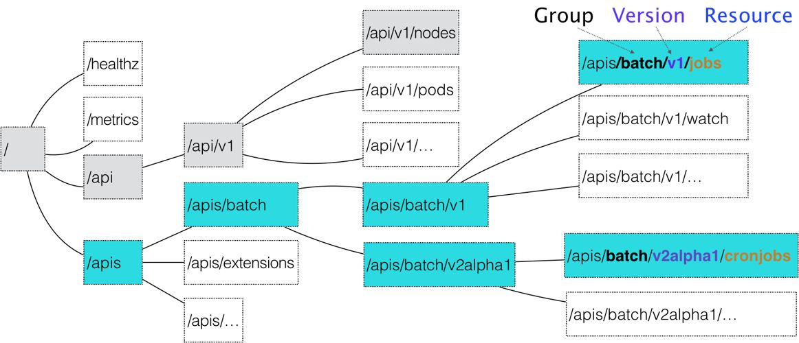

Kubernetes集群实践（十一）编写一个自定义资源CRD
本文主要介绍如何在Kubernetes编写自定义资源CRD。
关键词：k8s
前言
Kubernetes的最大亮点之一必定是它的声明式API设计，所谓的声明式就是告诉Kubernetes你要什么，而不是告诉它怎么做命令。我们日常使用Kubernetes做编排工作的时候，经常会接触Deployment、Service、Pod等资源对象，我们可以很灵活地创建其定义配置，然后执行kubectl apply命令，Kubernetes总能为我们创建相关资源对象并完成资源的注册，进而执行资源所负责的功能。
CRD，称之为自定义资源定义，本质上，它的表现形式是一段声明，用于定义用户定义的资源对象罢了。单单通过它还不能产生任何收益，因为开发者还要针对CRD定义提供关联的CRD对象CRD控制器（CRD Controller）。CRD控制器通常可以通过Golang进行开发，只需要遵循Kubernetes的控制器开发规范，并基于client-go进行调用，并实现Informer、ResourceEventHandler、Workqueue等组件逻辑即可。听起来感觉很复杂的样子，不过其实真正开发的时候，并不困难，因为大部分繁琐的代码逻辑都能通过Kubernetes的code generator代码生成出来。关于如何进行CRD控制器的开发，下面我们会通过一个例子慢慢地深入，希望通过实践来理解CRD的原理。
声明式API
命令式API
首先，声明式API是相对于命令式API而言的。
假设我们想创建一个deployment，可以创建一个下面的yaml文件：
1 | apiVersion: apps/v1 |
然后在master执行
1 | kubectl create -f nginx.yaml |
然后这两个Pod就跑起来了。
如果想修改上的资源清单，需要先修改资源文件，然后再执行
1 | kubectl replace -f nginx.yaml |
以上基于yaml文件操作的方式，被称作命令式API。同样属于命令式API的还有Docker Swarm的创建方式：
1 | docker service create --name nginx --replicas 2 nginx |
声明式API
kubectl apply 的操作属于声明式API。
kubectl replace的操作，可以看作是使用新的YAML文件的API对象，替换原有的API对象；kubectl set image和 kubelctl edit也是对原有对象的修改，这些都属于命令式API。
kube-apiserver在响应命令式请求时，只能一次处理一个写请求，否则可能会出现冲突。
而对于apply的声明式请求，可以一次处理多个写操作，并且具备merge能力。
所谓声明式API，就是告诉kubernetes你要什么，而不是告诉他怎么做命令。在日常做容器编排时，经常会操作Deployment、Service、Pod等资源对象，我们可以很灵活的创建其自定义配置，然后执行kubectl apply 命令，kubernetes可以创建相关资源对象并完成资源的注册，进而执行资源所负责的功能。
有了自定义API对象，开发者就不需要逐一进行Deployment、Service 、ConfigMap等步骤，而是创建一些可以表述整个应用程序或者软件服务的对象。除此之外，我们还可以在创建高阶对象的基础上创建底层对象。例如：我们想要创建一个backup资源，在定义yaml的同时，可以希望通过spec的定义进行日常的备份操作声明，当提交给k8s集群时，相关的Deployment、Service资源会被自动创建，很大程度上让业务扩展性加大。
CRD
CRD，称之为自定义资源定义，本质上，它的表现形式是一段声明，用于定义用户定义的资源对象罢了。单单通过它还不能产生任何收益，因为开发者还要针对CRD定义提供关联的CRD对象CRD控制器（CRD Controller）。CRD控制器通常可以通过Golang进行开发，只需要遵循Kubernetes的控制器开发规范，并基于client-go进行调用，并实现Informer、ResourceEventHandler、Workqueue等组件逻辑即可。听起来感觉很复杂的样子，不过其实真正开发的时候，并不困难，因为大部分繁琐的代码逻辑都能通过Kubernetes的code generator代码生成出来。关于如何进行CRD控制器的开发，下面我们会通过一个例子慢慢地深入，希望通过实践来理解CRD的原理。
API
整个kubernetes里所有API对象都可以用下面的树形结构表示出来：

可以看出，API对象的组织方式，是层层递进的。
如果现在想要创建一个CronJob对象，那么YAML文件的开始部分需要这样写：
1 | apiversion: batch/v2alpha1 |
对于上文，Crontab是这个API对象的资源类型，batch是他的组，v2alpha1是版本；
当提交了这个yaml文件一行，kubernetes就会把这个YAML文件描述内容，转换成一个CronJob对象
apiserver会遵循以下的流程：
匹配API对象的组。
通常核心对象如Pod、Node不需要group，直接在/api这个层级下进行匹配；
而对于CronJob等非核心API对象来说，Kubernetes必须在 /apis这个层级下找到对应的Group，根据batch，找到/apis/batch。
API是根据对象功能为依据的。如Job和CronJob就属于batch这个Group。
匹配API对象的版本号
对于CronJob这个API对象来说，Kubernetes在batch这个Group下，匹配的版本号就是v2alpha1
K8s中同一种API对象可以由多个版本，这正是K8s进行API版本化管理的手段